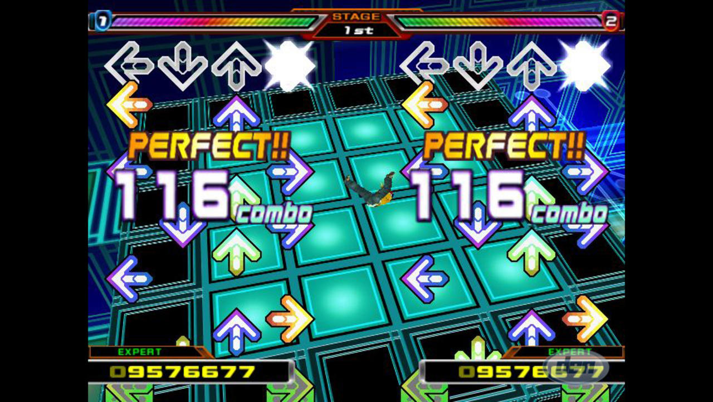
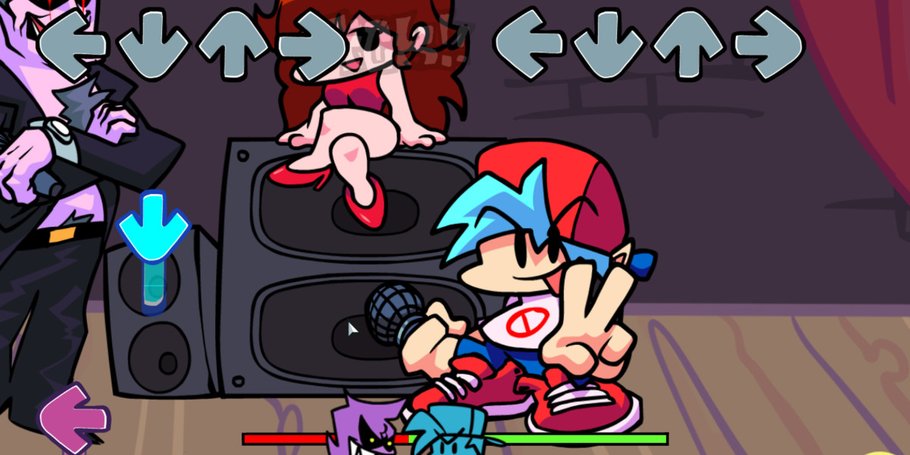
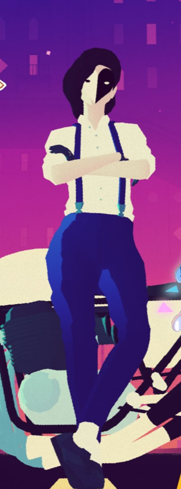
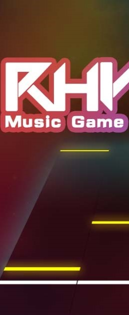

Rhythm game or rhythm action is a genre of music-themed action video game that challenges a player's sense of rhythm. Games in the genre typically focus on dance or the simulated performance of musical instruments, and require players to press (or step on) buttons in a sequence dictated on the screen. Many rhythm games include multiplayer modes in which players compete for the highest score or cooperate as a simulated musical ensemble. Rhythm games often feature novel game controllers shaped like musical instruments such as guitars and drums to match notes while playing songs. Certain dance-based games require the player to physically dance on a mat, with pressure-sensitive pads acting as the input device.

One early rhythm-based electronic game was the handheld game Simon, created in 1978 by Ralph Baer (who
created the Magnavox Odyssey) and Howard Morrison. The game used the "call and response" mechanic, in
which players take turns repeating increasingly complicated sequences of button presses.
Human Entertainment's Dance Aerobics was an early rhythm-based video game released in 1987, and allows
players to create music by stepping on Nintendo's Power Pad peripheral for the NES video game console.
The 1996 title PaRappa the Rapper has been credited as the first true rhythm game, and as one of the
first music-based games in general. It requires players to press buttons in the order that they appear
on the screen, a basic mechanic that formed the core of future rhythm games. The success of PaRappa the
Rapper sparked the popularity of the music game genre. In 1997, Konami released the DJ-themed rhythm
game Beatmania in Japanese arcades. Its arcade cabinet features buttons similar to those of a musical
keyboard, and a rubber pad that emulates a vinyl record. Beatmania was a surprise hit, inspiring
Konami's Games and Music Division to change its name to Bemani in honor of the game, and to begin
experimenting with other rhythm game concepts. Its successes include GuitarFreaks, which features a
guitar-shaped controller, and 1998's Pop'n Music, a game similar to Beatmania in which multiple colorful
buttons must be pressed. While the GuitarFreaks franchise continues to receive new arcade releases in
Japan, it was never strongly marketed outside of the country. This allowed Red Octane and Harmonix to
capitalize on the formula in 2005 with the Western-targeted Guitar Hero. In general, few Japanese arcade
rhythm games were exported abroad because of the cost of producing the peripherals and the resulting
increases in retail prices. The 1999 Bemani title DrumMania featured a drum kit controller, and could be
linked with GuitarFreaks for simulated jam sessions. Similarly, this concept was later appropriated by
Harmonix for their game Rock Band.


| Name | Price | Players | Release date |
|---|---|---|---|
| A Dance Of Fire And Ice | 4.99€ | 10 000 | January 25th 2019 |
| Audiosurf 2 | 14.79€ | 500 | May 26th 2015 |
| Beat Saber | 29.99€ | 42 000 | May 1st 2018 |
| Melatonin | 14.99€ | 300 | December 15th 2022 |
| Muse Dash | 3.49€ | 11 000 | June 14th 2018 |
| Rhythm Doctor | 15.79€ | 3 000 | February 26th 2021 |
| Thumper | 19.99€ | 200 | October 10th 2016 |